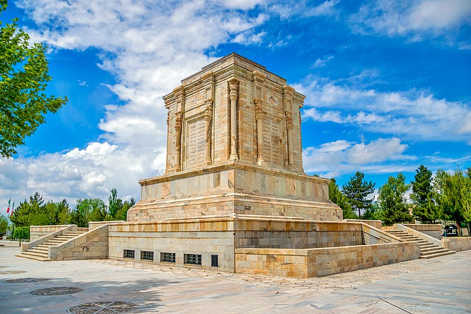
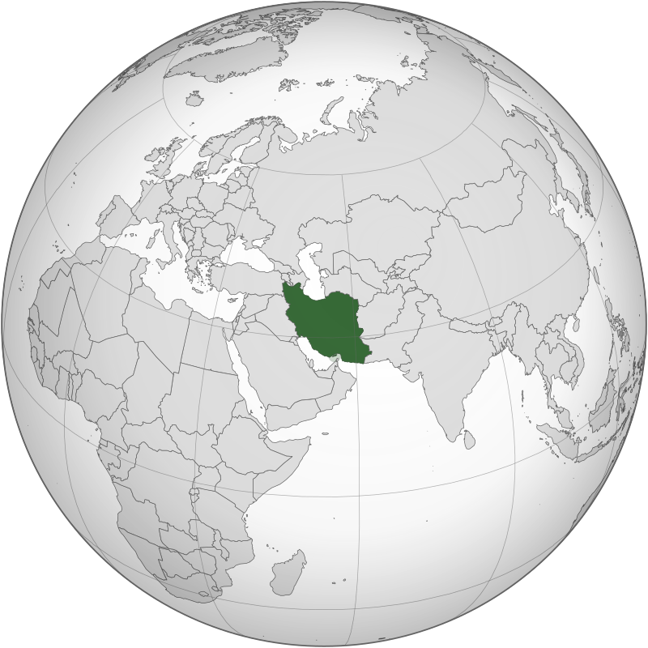

Capital and largest city:Tehran 35°41′N 51°25′E
From the late tenth to the late seventh century BC, the Iranian peoples, together with the "pre-Iranian" kingdoms, fell under the domination of the Assyrian Empire, based in northern Mesopotamia.[62][page needed] Under king Cyaxares, the Medes and Persians entered into an alliance with Babylonian ruler Nabopolassar, as well as the fellow Iranian Scythians and Cimmerians, and together they attacked the Assyrian Empire. The civil war ravaged the Assyrian Empire between 616 and 605 BC, thus freeing their respective peoples from three centuries of Assyrian rule.[62] The unification of the Median tribes under king Deioces in 728 BC led to the foundation of the Median Empire and their capital Ecbatana, which by 612 BC, controlled almost the entire territory of present-day Iran and eastern Anatolia.[63] This marked the end of the Kingdom of Urartu as well, which was subsequently conquered and dissolve[64][65]
In 550 BC, Cyrus the Great, the son of Mandane and Cambyses I, took over the Median Empire, and founded the Achaemenid Empire by unifying other city-states. Pasargadae was the capital of the Achaemenid Empire during the time of Cyrus the Great. The conquest of Media was a result of what is called the Persian Revolt. Later conquests under Cyrus and his successors expanded the empire to include Lydia, Babylon, Egypt, parts of the Balkans and Eastern Europe proper, as well as the lands to the west of the Indus and Oxus rivers. In 539 BC Persian forces defeated the Babylonian army at Opis, and marked the end of around four centuries of Mesopotamian domination of the region by conquering the Neo-Babylonian Empire.[66][67][68]
Tomb of Ferdowsi,
a 10th-century AD Persian poet
and the author of Shahnameh,
the national epic of Iran
Tomb of Saadi,
an influential
13th-century AD Persian
poet of the Medieval period
By the 1500s, Ismail I established the Safavid Empire,[116][117] with his capital at Tabriz.[108] Beginning with Azerbaijan, he subsequently extended his authority over all of the Iranian territories, and established an intermittent Iranian hegemony over the vast relative regions, reasserting the Iranian identity within large parts of Greater Iran.[118] Iran was predominantly Sunni,[119] but Ismail instigated a forced conversion to the Shia branch,[120][117][121][122] spreading throughout the Safavid territories in the Caucasus, Iran, Anatolia, and Mesopotamia. As a result, modern-day Iran is the only official Shia nation of the world, with it holding an absolute majority in Iran and the Republic of Azerbaijan.[123][124]
In 1729, Nader Shah successfully drove out and conquered the Pashtun invaders. He subsequently took back the annexed Caucasian territories which were divided among the Ottoman and Russian authorities by the ongoing chaos in Iran. During the reign of Nader Shah, Iran reached its greatest extent since the Sasanian Empire, reestablishing the Iranian hegemony all over the Caucasus, as well as other major parts of the west and central Asia, and briefly possessing what was arguably the most powerful empire at the time.[125][126][127][125]
Compared to its preceding dynasties, the geopolitical reach of the Zand dynasty was limited. Many of the Iranian territories in the Caucasus gained de facto autonomy and were locally ruled through various Caucasian khanates. However, despite the self-ruling, they all remained subjects and vassals to the Zand king. It later quickly came to expand to include much of the rest of contemporary Iran (except for the provinces of Balochistan and Khorasan) as well as parts of Iraq. The lands of present-day Armenia, Azerbaijan, and Georgia were controlled by khanates which were de jure part of the Zand realm, but the region was de facto autonomous.[128] The island of Bahrain was also held for the Zands by the autonomous Al-Mazkur sheikhdom of Bushire.[129][130] The reign of its most important ruler, Karim Khan, was marked by prosperity and peace. With its capital at Shiraz, arts and architecture flourished under Karim Khan's reign, with some themes in architecture being revived from the nearby sites of the Achaemenid and Sasanian era's of pre-Islamic Iran. Another civil war ensued after the death of Karim Khan in 1779, out of which Agha Mohammad Khan emerged, founding the Qajar dynasty in 1794.